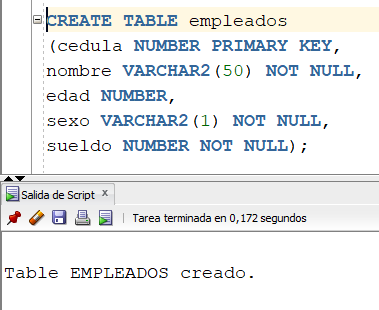
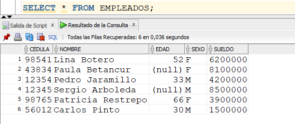
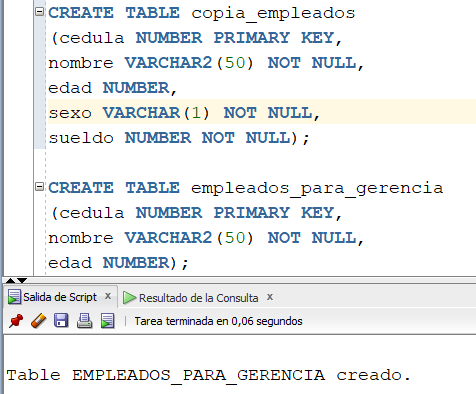
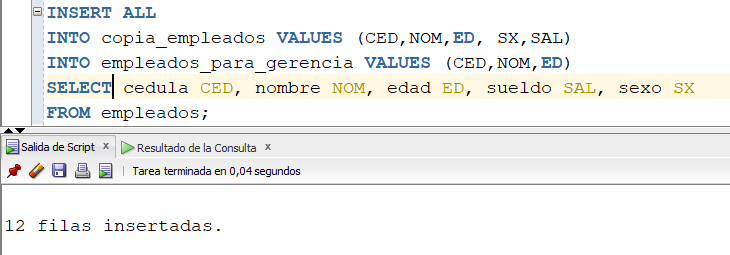
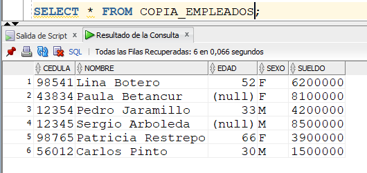
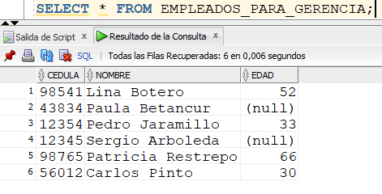
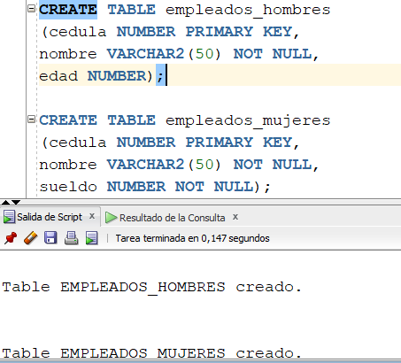
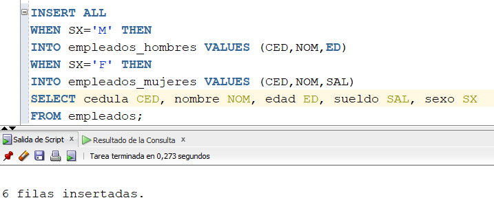
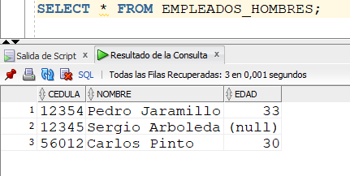
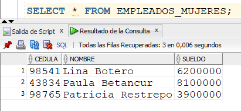

INSERT ALL INCONDICIONAL
En algún momento necesitamos pasar datos de una tabla a otra(s) tabla(s). Esta migración la necesitamos hacer sin condiciones en los datos, es decir, todos los datos de la tabla origen se migran hacia todas las tablas destino. Esto es lo que se conoce como INSERT ALL INCONDICIONAL.
Desarrollemos un ejemplo. En un usuario de trabajo, vamos a crear la siguiente tabla:

Y a la tabla recién creada, le vamos a grabar un conjunto de tuplas.

Luego vamos a crear otras dos nuevas tablas:

Vamos a hacer una migración de datos incondicional, usando la instrucción INSERT ALL sin condiciones. En este momento, la tabla origen (EMPLEADOS) tiene 6 tuplas, y las dos tablas destino (COPIA_EMPLEADOS y EMPLEADO_PARA_GERENCIA no tienen datos grabados).

Se puede observar que se hizo grabación, en las tablas destino, de 12 tuplas en total, 6 quedaron en COPIA_EMPLEADOS y 6 en EMPLEADOS_PARA_GERENCIA. Para hacer la migración de datos, no hubo condiciones. El origen de la migración es el resultado del SELECT que está al final de la instrucción, y los destinos son los que están en la cláusulas INTO. También es de anotar que en la tabla EMPLEADOS_PARA_GERENCIA, se grabaron solamente la cédula, nombre y edad de los empleados, mientras que en COPIA_EMPLEADOS, se copiaron todos los campos de la tabla.
Si miramos el contenido de las dos tablas destino, las cuales estaban vacías, obtenemos lo siguiente:


INSERT ALL CONDICIONAL
Este tipo de migración se diferencia de la anterior en que los datos del origen son migrados a destinos, dependiendo de unas condiciones dadas.
Veamos un ejemplo. Vamos a crear unas nuevas tablas.

Vamos a hacer una migración donde, dependiendo de si el empleado es hombre o mujer, lo grabamos en un destino específico.

A diferencia de la migración anterior, aparecen 6 tuplas grabadas. Esto debido a que 3 se grabaron en EMPLEADOS_HOMBRES y 3 en EMPLEADOS_MUJERES. Con la cláusula WHEN podemos condicionar el destino donde va a ser grabado el datos.
Si miramos el contenido de las dos tablas, tenemos lo siguiente:
|  |  |
Este INSERT ALL también puede manejar la cláusula ELSE. La sintaxis es la siguiente:
INSERT ALL
WHEN ……… THEN
INTO …….. VALUES …….
WHEN ……… THEN
INTO ………. VALUES ………
ELSE
INTO ……….. VALUES ………
SELECT ………………..
FROM …………..
Video: